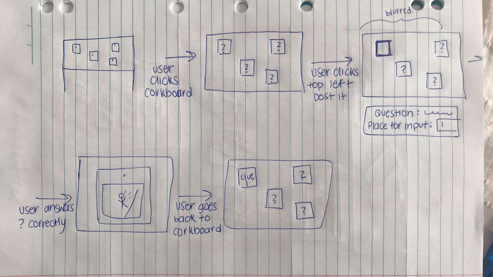

Hi, my name is Tina. I am an Information Technology student major in Software design at the University of Queensland.
I have been learning Python, Java, HTML, CSS, JavaScript and C for different use.
I like to spend my free time developing my programming skills. Moreover, I am always looking forward to learning more
toward my software design career.
Find me on:
Email me:
Case studies
Early Prototype
I designed a simple low-fidelity prototype that could be an idea for the project later this semester.
The prototype was inspired by Port Arthur Historical site in Tasmania where I visited in April.
The project is a simple interactive application that is hoping to make a better user experience than the traditional exhibit.
The exhibition is about World Word I's soldier's portraits and adopt a soldier program.
By combining these two datasets, users will be able to know more about the history back in WWI's period in a more interesting way.
Users can see the solider portraits and history by flipping the pokers card.
A small game was built in the project for users to have a play around when they are bored of reading all the content.
The game is a war and soldiers related to the game as the users need to pick up the necessary supply for soldiers.
Users can not only a small game when they are bored with the content but also learn through the game.
I think my early prototype project was a success as I got into the step of actually designing something on my own.
I was struggling with this project as I was confused about what I had to build and did not have any idea of how to combine different datasets together.
However, I reached out to the friend I know in the course and asked him to explain the brief to me.
That was a different learning approach to me instead of just giving up and not do anything.
Asking tutors questions in workshop and contact really helped me through the part of understanding what this project was really about.
Moreover, the feedback I got from the peer and tutors were very helpful as there was room for me to make improvement and it encouraged me to learn more and make the project better.
My project was realistic, however, it was not deep enough as there was not enough content for users.
Check my early prototype here:

Work-In-Progress


Before the team decided what we want to develop, we first talked about each other's strengths.
By discussing that, we can know what everyone is good at and have a different task to everyone so the team can work efficiently.
We then shared everyone's early porotype project to get some ideas of what we want to design for our application.
Each member brain stoned about how the website would possibly look like, sketch it on the whiteboard and gathered each idea to produce our MVP stage application.
We met up twice before our MVP delivery day to check on everyone's progress to finalise both report and our Demo.
We had a fair bit of discussion during the first meeting as some of us were confused about the concept we discussed.
By meeting with the group two times before the Demo day, our time bonded together better and everyone was clear about our progress.
For our MVP demo, I was responsible for the report part more than the designing and coding parts.
I not only completed my own part (SMART goal and people's plan) but also the other parts (persona and storyboard).
I think the team did well on completing our personal's work but also helping each other.
However, I think there are some parts we could improve. For example, we had a Google document for as to collaborate our report,
but some members were doing it in their own document instead of sharing so there came to some difficulties for me to see everyone's progress.
Apart from that, my team was really good at keeping things on loop and everyone communicated to each other well.
The demo we showed during the MVP presenting to the tutors and peers was similar to our original idea,
we did not make many changed between the time period of us deciding what our application wanted to look like and the demo we presented.
However, after getting the feedback from our testing plan we made in InVision,
we decided to change the answering way of getting hints from multiple choice to short answer questions
as users will actually need to read the documents to find hints to unlock the clues and that will involve more user interaction with the application.
Testing plan InVision :
Final Delievery
Before our final delivery, we received feedback not only from our tutors but also from our peers.
We evaluated each point that we think was valid and discuss what we should change about our application to
be able to give the best user experience. We decided to remove the "Chicken Coop" game we built in the application
as the tutors told us the game does not relate to our mining theme. As a result, we decided to remove it and put in
trivia about mining history. Moreover, a lot of our peer critiques were critiquing about our colour scheme, some say the
background colour is too dark, some say it is too bright. We did not know what to do when this kind of conflicts appear.
After discussing with the team, we decided to put in both light background and dark background in the setting function in the application.
Users can choose their own background colour according to their own preferences.
We removed three different storylines in the starting page and make storylines random when the users start the game.
As a result, users will be having different storylines when they are playing. We also removed the login function in the
application as it is not really useful. Apart from the difference I mentioned above, there is not anymore we changed from the original idea.
We also plugin the QR code scanner function in our website, the QR scanner idea is from our original concept and we plug it in before our final delivery.
The map in our final delivery has the name and the actual location where the mining accidents took place, so it is easier for users to solve the clues.
We improved our application by adding a tutorial section because of the peer critique we got indicated that the application is too complicated and they did not know how to use the application.
Hence, we came up with an idea of giving instruction of the application.
Moreover, we won the people's choice award on the tradshow day which was a really big honor to us.
For our final delivery, I was involved in the design part a bit more than the previous assessment.
Involving in the designing part also achieved the SMART goal I set early in the semester which was developing my designing skills.
I helped to create some of the hints that our application needs to plug in for users to get clues.
I am very satisfied with developing my designing skills by making those. I feel like my designing skills have developed throughout the semester
as I did not struggle when I was making those hints. I did a bit less of documenting part for our final report as I was doing part
of the designing. Moreover, my documenting skills have developed as I did not think my strength could be documenting reports.
Portfolio & Participation

I have seen several web-based portfolios on the internet and I sketch my idea before I started building my website. However,
my website has changed from the original idea I sketch because of a better layout.
I was going to put one image reflects on each case study on each page but it made the website looks messy.
As a result, I decided to use slideshows so I can present more images on the page.
I wrote down my content in my notebook first as I think that is a nice approach to do it to keep track of what I will be writing.
I only missed one contact throughout the semester and the reason why I did not attend that contact was because I got stuck on Moreton Island because of bad weather.
Even though I missed that contact, I made sure I talk to my team to see what happened in the contact and kept myself on loop.
Moreover, contact is the best time for my team to be together to gather our ideas, check our progress and ask for advice from the tutors.
I did not miss any workshop for the whole semester, as I feel like workshop is where I can learn more stuff for coding.
Completing workshop exercises widen the knowledge of making websites. Tutors always provide a wide range of knowledge to us.